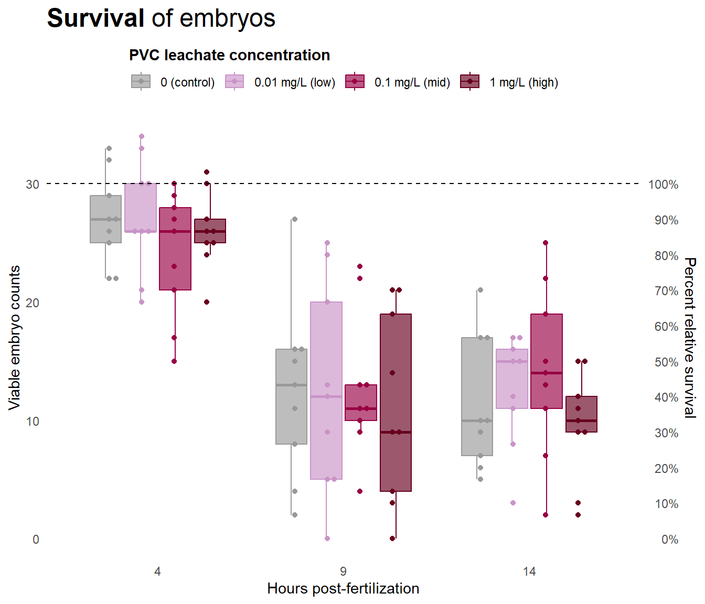
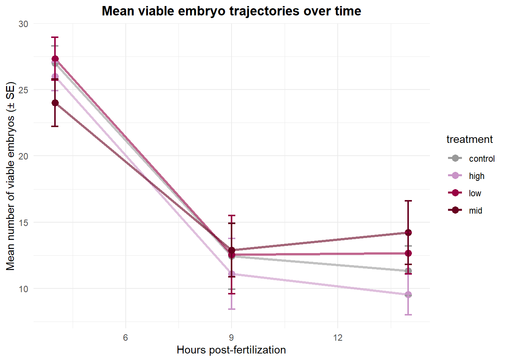
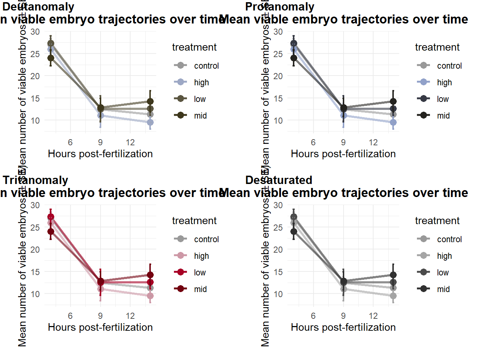
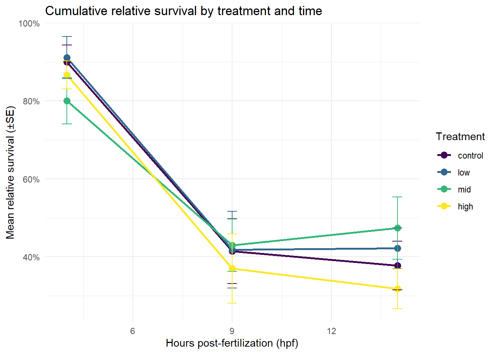
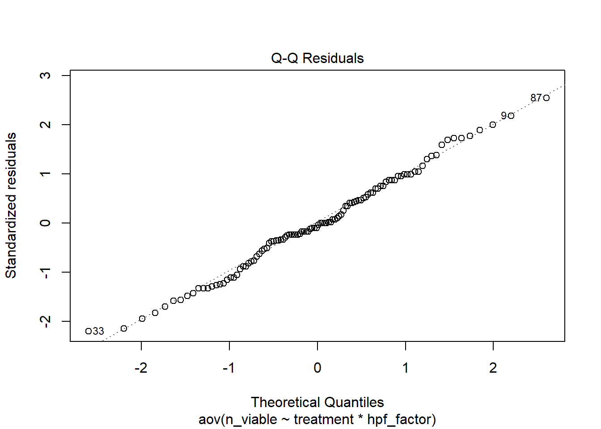
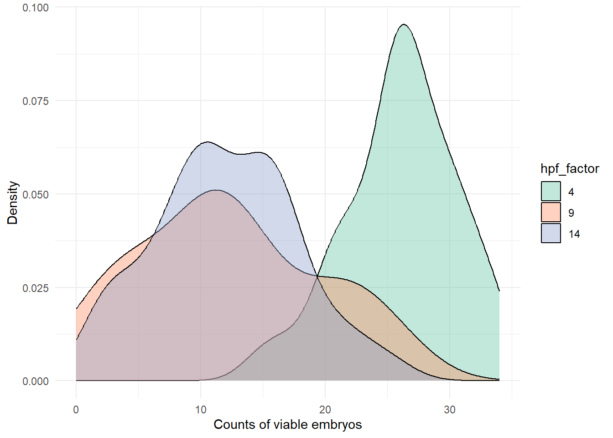
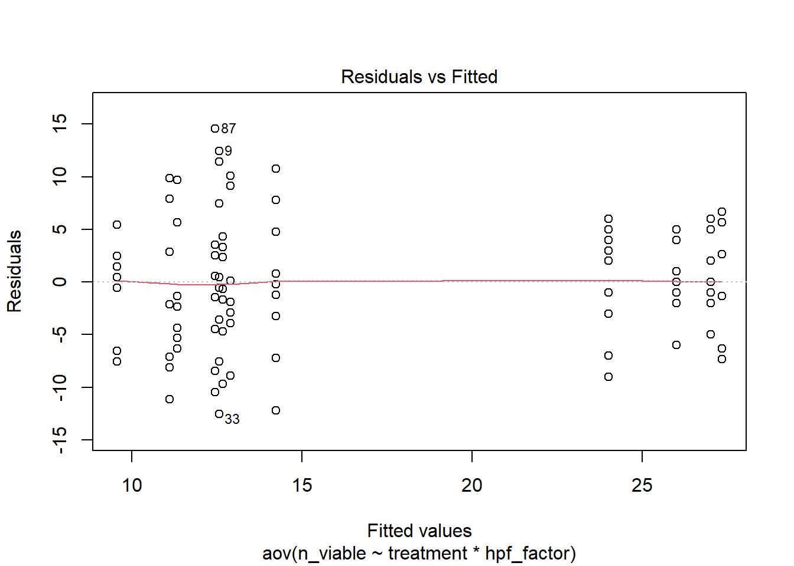

library(tidyverse)
library(emmeans)
library(ggplot2)
library(RColorBrewer)
library(viridis)
library(colorblindr)
library(ggbeeswarm)
library(ggrepel)
library(scales)
library(ggtext)Survival rates
How many survived?
1 Install packages & load libraries
2 Load in data
tidy_vials <- read.csv("../data/output/tidy_vials.csv")2.1 Data prep
3 Data preparation
Set factor levels for treatment and hpf
treat_levels <- c("control", "low", "mid", "high")
hpf_levels <- c(4, 9, 14) # use numeric to match numeric hpf
map_leachate <- c(control = 0, low = 0.01, mid = 0.1, high = 1)
survival <- tidy_vials %>%
mutate(
# ordered factors
treatment = factor(treatment, levels = treat_levels, ordered = TRUE),
hpf_factor = factor(hpf, levels = hpf_levels, ordered = TRUE),
# numeric concentration mapped from treatment (safe + explicit)
leachate_mgL = unname(map_leachate[as.character(treatment)])
) %>%
dplyr::select(sample_id, treatment, hpf, hpf_factor, leachate_mgL, n_viable)
str(survival)'data.frame': 108 obs. of 6 variables:
$ sample_id : chr "10C14" "10C4" "10C9" "10H14" ...
$ treatment : Ord.factor w/ 4 levels "control"<"low"<..: 1 1 1 4 4 4 2 2 2 3 ...
$ hpf : int 14 4 9 14 4 9 14 4 9 14 ...
$ hpf_factor : Ord.factor w/ 3 levels "4"<"9"<"14": 3 1 2 3 1 2 3 1 2 3 ...
$ leachate_mgL: num 0 0 0 1 1 1 0.01 0.01 0.01 0.1 ...
$ n_viable : int 21 29 16 11 20 19 12 26 25 19 ...4 Visualize
4.1 Boxplot
# labels for legend
labs_map <- c(control = "0 (control)", low = "0.01 mg/L (low)",
mid = "0.1 mg/L (mid)", high = "1 mg/L (high)")
box <- ggplot(survival, aes(x = hpf_factor, y = n_viable, color = treatment, fill = treatment)) +
geom_boxplot(alpha = 0.65, outlier.shape = NA) +
geom_beeswarm(aes(group = interaction(hpf_factor, treatment)),
dodge.width = 0.7, priority = "density", cex = 1.2) +
scale_fill_manual(
name = "PVC leachate concentration",
values = leachate_colors,
breaks = names(labs_map),
labels = labs_map
) +
scale_color_manual(
name = "PVC leachate concentration",
values = leachate_colors,
breaks = names(labs_map),
labels = labs_map
) +
labs(
x = "Hours post-fertilization", y = "Viable embryo counts",
title = "**Survival** of embryos"
) +
geom_hline(yintercept = 30, linetype = "dashed") +
scale_y_continuous(
limits = c(0, 34), breaks = c(0, 10, 20, 30),
sec.axis = sec_axis(~ . / 30 * 100, name = "Percent relative survival",
breaks = seq(0, 100, 10),
labels = scales::label_number(accuracy = 1, suffix = "%"))
) +
theme_minimal() +
theme(
axis.ticks.x = element_blank(),
panel.grid.minor = element_blank(),
panel.grid.major = element_blank(),
legend.position = "top",
legend.title = element_text(face = "bold"),
legend.title.position = "top",
plot.title = element_markdown(size = 18, face = "plain")
)
box
Colorblind..
cvd_grid(box)
ggsave("../plots/viablecounts_survival_boxplot.png", width = 8, height = 6, dpi = 600)4.2 Line plot
mean_trajectories <- tidy_vials %>%
group_by(treatment, hpf_factor) %>%
summarise(
mean_viable = mean(n_viable, na.rm = TRUE),
se_viable = sd(n_viable, na.rm = TRUE) / sqrt(n()),
.groups = "drop"
)
line <- ggplot(mean_trajectories, aes(x = hpf_factor, y = mean_viable,
color = treatment, group = treatment)) +
geom_line(linewidth = 1.2, alpha = 0.6) +
geom_point(size = 3) +
geom_errorbar(aes(ymin = mean_viable - se_viable,
ymax = mean_viable + se_viable),
width = 0.2, linewidth = 0.8) +
scale_color_manual(values = leachate_colors) +
labs(
title = "Mean viable embryo trajectories over time",
x = "Hours post-fertilization",
y = "Mean number of viable embryos (± SE)"
) +
theme_minimal() +
theme(
legend.position = "right",
plot.title = element_text(hjust = 0.5, face = "bold")
)
line
Colorblind…
cvd_grid(line)
4.3 Relative survival
- Cross-sectional design:
At each timepoint (4, 9, 14 hpf) you sample a different subset of embryos — i.e., you don’t track the same individuals over time. You have counts of viable (surviving) embryos per treatment × timepoint combination. So, at each timepoint, you can measure proportion surviving relative to the starting number of embryos
Calculate the proportionate change from one time point to the next:
Relative survival to time hpf4 = (mean embryo count at hpf4)/(mean _eggs_per_vial) Relative survival to time hpf9 = (mean embryo count at hpf9)/(mean _eggs_per_vial). Relative survival to time hpf14 = (mean embryo count at hpf14)/(mean _eggs_per_vial).
We take our theoretical ‘starting point’ from the knowledge that a M. cap bundle has 15+/- 5.1 eggs. In each vial we placed 2 bundles.
set.seed(123) # for reproducibility
# Simulate eggs per bundle: 2 bundles per vial, 120 vials
n_vials <- 120
n_bundles <- 2 * n_vials
# Simulate egg counts per bundle
eggs_per_bundle <- rnorm(n_bundles, mean = 15, sd = 5.1)
# Optional: enforce only positive egg counts (truncated normal)
eggs_per_bundle <- pmax(round(eggs_per_bundle), 1)
# Group into vials: every two bundles go into one vial
eggs_per_vial <- rowSums(matrix(eggs_per_bundle, ncol = 2, byrow = TRUE))
# Summarize
mean_eggs_per_vial <- mean(eggs_per_vial)
sd_eggs_per_vial <- sd(eggs_per_vial)
# Output
mean_eggs_per_vial[1] 30sd_eggs_per_vial[1] 6.446939
Note
Here we use mean total embryos = 30, SD = 6.4 as a starting point, our 100%, that we used to compare all our counts to for relative survival
survival <- survival %>%
mutate(relative_survival = n_viable / 30)
survival_summary <- survival %>%
group_by(treatment, hpf) %>%
summarise(
mean_survival_rate = mean(relative_survival, na.rm = TRUE),
sd_survival_rate = sd(relative_survival, na.rm = TRUE),
n = n(),
se_survival_rate = sd_survival_rate / sqrt(n) # optional: standard error
)
survival_summary| treatment | hpf | mean_survival_rate | sd_survival_rate | n | se_survival_rate |
|---|---|---|---|---|---|
| control | 4 | 0.9000000 | 0.1290994 | 9 | 0.0430331 |
| control | 9 | 0.4148148 | 0.2489484 | 9 | 0.0829828 |
| control | 14 | 0.3777778 | 0.1878238 | 9 | 0.0626079 |
| low | 4 | 0.9111111 | 0.1624466 | 9 | 0.0541489 |
| low | 9 | 0.4185185 | 0.2949158 | 9 | 0.0983053 |
| low | 14 | 0.4222222 | 0.1572330 | 9 | 0.0524110 |
| mid | 4 | 0.8000000 | 0.1787301 | 9 | 0.0595767 |
| mid | 9 | 0.4296296 | 0.2023778 | 9 | 0.0674593 |
| mid | 14 | 0.4740741 | 0.2396628 | 9 | 0.0798876 |
| high | 4 | 0.8666667 | 0.1080123 | 9 | 0.0360041 |
| high | 9 | 0.3703704 | 0.2674179 | 9 | 0.0891393 |
| high | 14 | 0.3185185 | 0.1528535 | 9 | 0.0509512 |
ggplot(survival_summary, aes(x = hpf, y = mean_survival_rate, color = treatment, group = treatment)) +
geom_line(linewidth = 1) +
geom_point(size = 3) +
geom_errorbar(aes(ymin = mean_survival_rate - se_survival_rate,
ymax = mean_survival_rate + se_survival_rate),
width = 0.3) +
scale_y_continuous(labels = scales::percent_format(accuracy = 1)) +
labs(
x = "Hours post-fertilization (hpf)",
y = "Mean relative survival (±SE)",
color = "Treatment",
title = "Cumulative relative survival by treatment and time"
) +
theme_minimal()
5 Analyze
5.1 Run Two-way ANOVA
Are the mean numbers of total surviving viable embryos in each treatment across time different from each other? This ANOVA ignores embryo stage (where the embryo is in terms of development) and only looks at embryos with a status that is typical or uncertain and does not model any random effects (ex. night of spawn)
anova_result <- aov(n_viable ~ treatment * hpf_factor, data = survival)Summarize the ANOVA result
summary(anova_result) Df Sum Sq Mean Sq F value Pr(>F)
treatment 3 58 19.2 0.523 0.668
hpf_factor 2 4696 2348.2 64.041 <2e-16 ***
treatment:hpf_factor 6 126 21.0 0.572 0.752
Residuals 96 3520 36.7
---
Signif. codes: 0 '***' 0.001 '**' 0.01 '*' 0.05 '.' 0.1 ' ' 15.2 Normality
For ANOVA, it’s the residuals (not the raw data) that should be approximately normal. ### Q-Q plot
plot(anova_result, which = 2) # QQ plot
5.2.1 Shapiro-Wilk test
shapiro.test(residuals(anova_result))
Shapiro-Wilk normality test
data: residuals(anova_result)
W = 0.99098, p-value = 0.6959survival %>%
group_by(hpf) %>%
summarise(shapiro_p = shapiro.test(n_viable)$p.value)| hpf | shapiro_p |
|---|---|
| 4 | 0.4657737 |
| 9 | 0.3221533 |
| 14 | 0.7324457 |
Note
Shapiro Wilk Test : If p < 0.05 the sample does not come from a normal distribution. If p > 0.05 the sample comes from a normal distribution. Here we see our count data for each hpf come from an approximately normal distribution.
Overlapping density plots
ggplot(survival, aes(x = n_viable, fill = hpf_factor, group = hpf_factor)) +
geom_density(alpha = 0.4) +
labs(x = "Counts of viable embryos", y = "Density") +
scale_fill_brewer(palette = "Set2") +
theme_minimal()
5.3 Equal variance
plot(anova_result, which = 1)
✅ What looks good here The red line is nearly horizontal and centered around 0. There’s no obvious curve or systematic trend. Variance within each cluster of fitted values (≈ 8–15 and ≈ 25–27) looks roughly similar — no funnel shape. Residuals are fairly symmetrically distributed above/below zero. That means our data show no strong evidence of heteroscedasticity (variance inequality). The ANOVA’s equal-variance assumption looks reasonably met.
⚠️ Things to keep an eye on We have two main clusters of fitted values (≈ 10–15 vs 25–27). That’s expected with our distinct mean embryo counts at early (4hpf) vs later (9 & 14 hpf) development. Variances look somewhat smaller in the higher-mean cluster, but not alarmingly so. A few labeled points (33, 87, 9) are outliers
5.3.1 Inspect outliers
survival[c(9, 33, 87), ]| sample_id | treatment | hpf | hpf_factor | leachate_mgL | n_viable | relative_survival | |
|---|---|---|---|---|---|---|---|
| 9 | 10L9 | low | 9 | 9 | 0.01 | 25 | 0.8333333 |
| 33 | 3L9 | low | 9 | 9 | 0.01 | 0 | 0.0000000 |
| 87 | 8C9 | control | 9 | 9 | 0.00 | 27 | 0.9000000 |
5.3.2 Levene’s test
# Levene’s test (more robust)
library(car)
leveneTest(n_viable ~ treatment * hpf_factor, data = survival)| Df | F value | Pr(>F) | |
|---|---|---|---|
| group | 11 | 1.254304 | 0.2629508 |
| 96 | NA | NA |
5.4 What are the means and sd’s?
# Calculate mean and SD for each hpf group
summary_data <- survival %>%
group_by(hpf, treatment) %>%
summarise(
mean_embryo = mean(n_viable),
sd_embryo = sd(n_viable),
.groups = "drop"
)
print(summary_data)# A tibble: 12 × 4
hpf treatment mean_embryo sd_embryo
<int> <ord> <dbl> <dbl>
1 4 control 27 3.87
2 4 low 27.3 4.87
3 4 mid 24 5.36
4 4 high 26 3.24
5 9 control 12.4 7.47
6 9 low 12.6 8.85
7 9 mid 12.9 6.07
8 9 high 11.1 8.02
9 14 control 11.3 5.63
10 14 low 12.7 4.72
11 14 mid 14.2 7.19
12 14 high 9.56 4.596 emmeans
Within each developmental timepoint (4, 9, 14 hpf), do mean viable-embryo counts differ among treatments?
emmeans(anova_result, pairwise ~ treatment | hpf_factor)$emmeans
hpf_factor = 4:
treatment emmean SE df lower.CL upper.CL
control 27.00 2.02 96 22.99 31.0
low 27.33 2.02 96 23.33 31.3
mid 24.00 2.02 96 19.99 28.0
high 26.00 2.02 96 21.99 30.0
hpf_factor = 9:
treatment emmean SE df lower.CL upper.CL
control 12.44 2.02 96 8.44 16.5
low 12.56 2.02 96 8.55 16.6
mid 12.89 2.02 96 8.88 16.9
high 11.11 2.02 96 7.10 15.1
hpf_factor = 14:
treatment emmean SE df lower.CL upper.CL
control 11.33 2.02 96 7.33 15.3
low 12.67 2.02 96 8.66 16.7
mid 14.22 2.02 96 10.22 18.2
high 9.56 2.02 96 5.55 13.6
Confidence level used: 0.95
$contrasts
hpf_factor = 4:
contrast estimate SE df t.ratio p.value
control - low -0.333 2.85 96 -0.117 0.9994
control - mid 3.000 2.85 96 1.051 0.7199
control - high 1.000 2.85 96 0.350 0.9852
low - mid 3.333 2.85 96 1.168 0.6486
low - high 1.333 2.85 96 0.467 0.9661
mid - high -2.000 2.85 96 -0.701 0.8966
hpf_factor = 9:
contrast estimate SE df t.ratio p.value
control - low -0.111 2.85 96 -0.039 1.0000
control - mid -0.444 2.85 96 -0.156 0.9986
control - high 1.333 2.85 96 0.467 0.9661
low - mid -0.333 2.85 96 -0.117 0.9994
low - high 1.444 2.85 96 0.506 0.9575
mid - high 1.778 2.85 96 0.623 0.9245
hpf_factor = 14:
contrast estimate SE df t.ratio p.value
control - low -1.333 2.85 96 -0.467 0.9661
control - mid -2.889 2.85 96 -1.012 0.7428
control - high 1.778 2.85 96 0.623 0.9245
low - mid -1.556 2.85 96 -0.545 0.9477
low - high 3.111 2.85 96 1.090 0.6965
mid - high 4.667 2.85 96 1.635 0.3642
P value adjustment: tukey method for comparing a family of 4 estimates | hpf | Treatment means (±SE) | Pattern | Tukey post-hoc contrasts |
|---|---|---|---|
| 4 hpf | Means ≈ 24–27 | All treatments roughly equal; p > 0.6 for every pair | → no difference |
| 9 hpf | Means ≈ 11–13 | All treatments tightly clustered; p > 0.9 | → no difference |
| 14 hpf | Means ≈ 9.5–14 | Slight trend: mid > low > control > high, but SE = 2 and all p > 0.36 | → no significant difference |
Across 4, 9, and 14 hpf: The treatment effect was consistently non-significant, even within each developmental stage window. .
7 Summary
A two-way ANOVA found no significant effects of leachate treatment, developmental stage (hpf), or their interaction on the developmental index (all p > 0.05). Pairwise Tukey comparisons within each hpf confirmed no differences among treatments (adjusted p > 0.36). A two-way ANOVA found no significant interaction between treatment and developmental time (hpf) on embryo viability (p > 0.05). Estimated marginal means indicated similar numbers of viable embryos among treatments at 4 hpf (24–27 ± 2 SE), 9 hpf (11–13 ± 2 SE), and 14 hpf (10–14 ± 2 SE). Tukey-adjusted pairwise contrasts within each timepoint revealed no significant differences between treatments (all adjusted p > 0.36), indicating that leachate exposure did not measurably affect survival across embryonic stages.